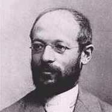

<meta charset="UTF-8"> 

<meta name="mobile-web-app-capable" content="yes">
<meta content='width=device-width, initial-scale=1.0, maximum-scale=1.0, user-scalable=0' name='viewport'/>
<meta name="apple-mobile-web-app-capable" content="yes">
<meta name="apple-mobile-web-app-status-bar-style" content="white">
<meta name="apple-mobile-web-app-title" content="FreeBooks">
<title>Georg Simmel</title>
<style>*{
	font-family: Helvetica;
	font-weight: 300;
}
 
main{
	text-align: justify;
	width: 100%;
	font-size: 17px;
	line-height: 1.4; 
}

@media (min-width:17cm){
	main{
		width: 17cm;
		margin: 0 auto;
	}
}

a {
	text-decoration: none;
	color: black;
}

table td:first-child{
	color: silver;
}

h1{
	margin: 12mm 0 4mm 0;
}
h2{
	margin: 8mm 0 4mm 0;
}</style>

<style>.bio p {display: none;}
.bio p:nth-child(2){display: block;}
.bio img {width: 40%; float: right; padding: 0 0 3mm 3mm;}</style>

<main>
<h1>Georg Simmel</h1><div class='bio'>
<p>Georg Simmel (* 1. März 1858 in Berlin; † 26. September 1918 in Straßburg) war ein deutscher Philosoph und Soziologe. Er leistete wichtige Beiträge zur Kulturphilosophie, war Begründer der „formalen Soziologie“ und der Konfliktsoziologie. Simmel stand in der Tradition der Lebensphilosophie, aber auch der des Neukantianismus.</p>
</div>
<h2>Lebenslauf</h2>
<table>
<tr><td>1858</td><td>geboren in Berlin</td></tr>
<tr><td>1918</td><td>gestorben in Straßburg</td></tr>
</table>
<h2>Sachbücher</h2>

<table>

	<tr> 
		<td> 1890 </td> 
		<td> <a href='ÜbersocialeDifferenzierung'> Über sociale Differenzierung </a> </td>
	</tr>

	<tr> 
		<td> 1900 </td> 
		<td> <a href='PhilosophiedesGeldes'> Philosophie des Geldes </a> </td>
	</tr>

	<tr> 
		<td> 1906 </td> 
		<td> <a href='DieReligion'> Die Religion </a> </td>
	</tr>
</table>


</main>
